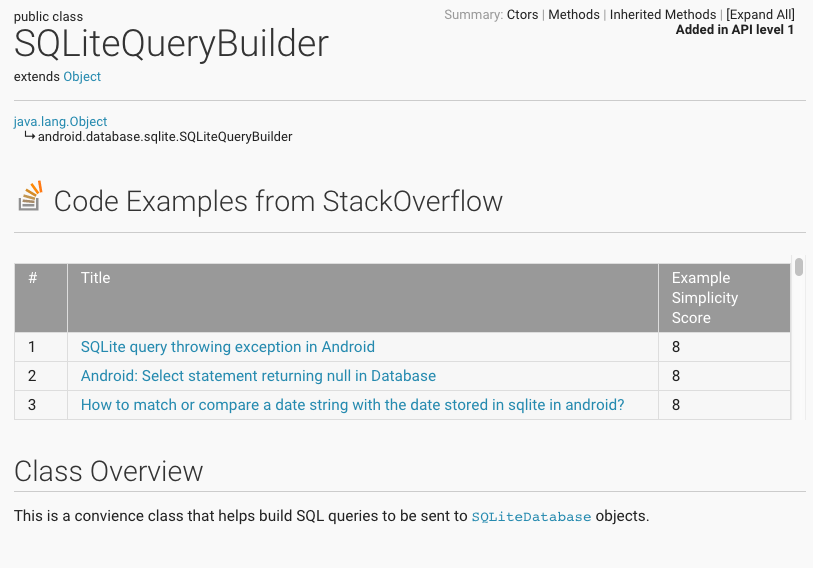
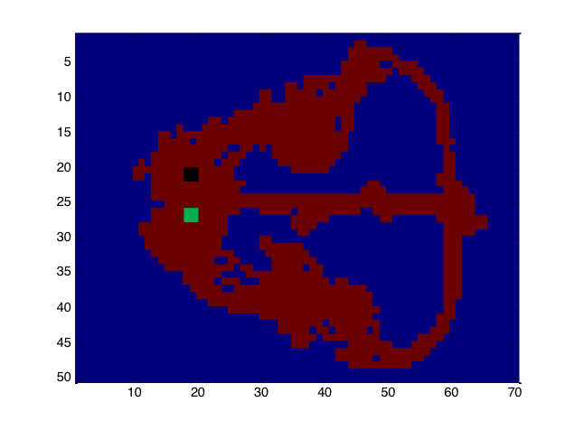

Projects
Linking Android documentation to code examples on StackOverflow
I incorporate what I've learned in machine learning, along with my experience in software engineering to create a tool to help Android developers find code examples.
Using research and data from the Software Architecture Group at uWaterloo, myself and Adriaan were able to extract Fully Qualified Names (FQNs) from StackOverflow code snippets and use them as features to build algorithms in Python for document relations.
We provide a usable Chrome plugin that will augment Android documentation with links to StackOverflow. The tool provides links sorted by complexity, which is a tf-idf weighted score defined by the number of different Fully Qualified Names (FQNs) that are used in the snippet. This allows the user to pick how 'detailed' their example will be.
Installation instructions are located on the public GitHub repository. We also explore augmenting of StackOverflow snippets, as well as finding related questions based on FQN features, outlined in our whitepaper.
Canadian Income Tax Calculator

After recieving my first pay-stub, I was curious about how income tax was calculated. I decided to investigate the Canadian income tax system further and I thought it would be a good idea to create lightweight mobile application. This would serve as a tool to those who want to quickly estimate their post-tax salaries.
I became familiar with the BlackBerry 10 (C++ / Qt) development platform and launched the application on BlackBerry World. But after switching my personal phone to Android, I decided to develop an Android version as well. I eventually replaced my BlackBerry version with a ported Android version. To this date, the application has recieved positive feedback and has over 4000 cross-platform downloads.
Machine learning methods for neural decoding
I was introduced to the world of machine learning through the graduate level machine learning course at uWaterloo. For this project I worked with neurological data to investigate different machine learning methods to decode brain data. The focus was on Hippocampal place cells in a rat that act as a internal GPS. I used MATLAB, and LIBSVM library and worked with very large neural datasets. This project explored the the K-NN and SVM machine learning algorithms to decode a rat's position in a maze using Hippocampal data. The whitepaper is available to read as well.
Hack The North 2015 Project: Swing
In the span of 36-hours we built a prototype application that acts as a digital coach for the sport of axe throwing. Our idea was to attach an Internet of Things sensor onto the axe and have it read measurments such as rotations and acceleration. I implemented our idea into an Android mobile application by extending the base source code provided by the manufactuer, and configured the device to send the measurements we needed. An overview is available on DevPost.
Down Syndrome Patient Database
During my undergraduate degree, I was given a research internship to help the Down Syndrome clinic at the Children's Hospital of Eastern Ontario. I was tasked to build a system to help input and store data for the clinic. This data would be used to help with treatment and further research into Down Syndrome. I created the system using PHP and MySQL and it has extended on by succeeding interns. This project is what got me interested in software development and made me realize how big of an impact software can have.